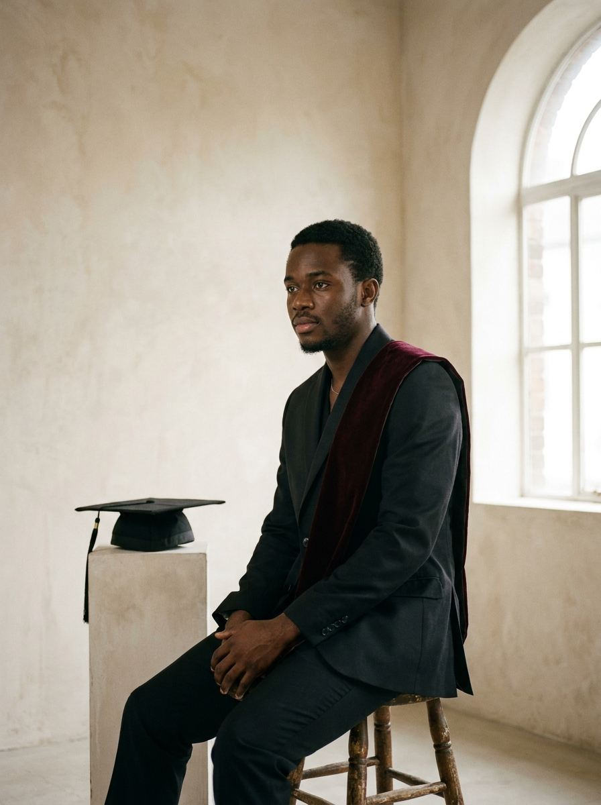
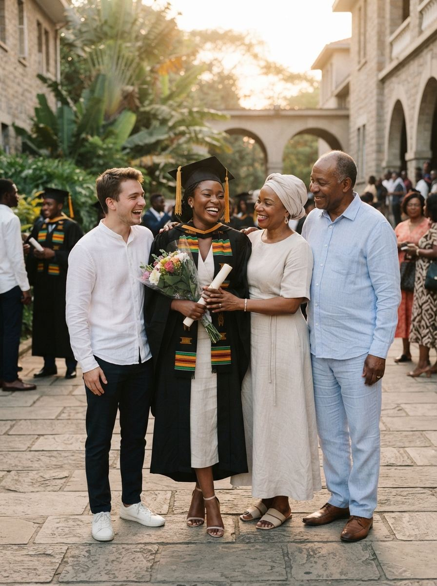
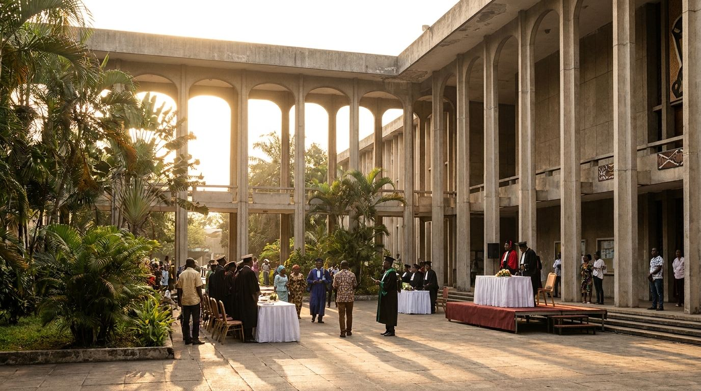
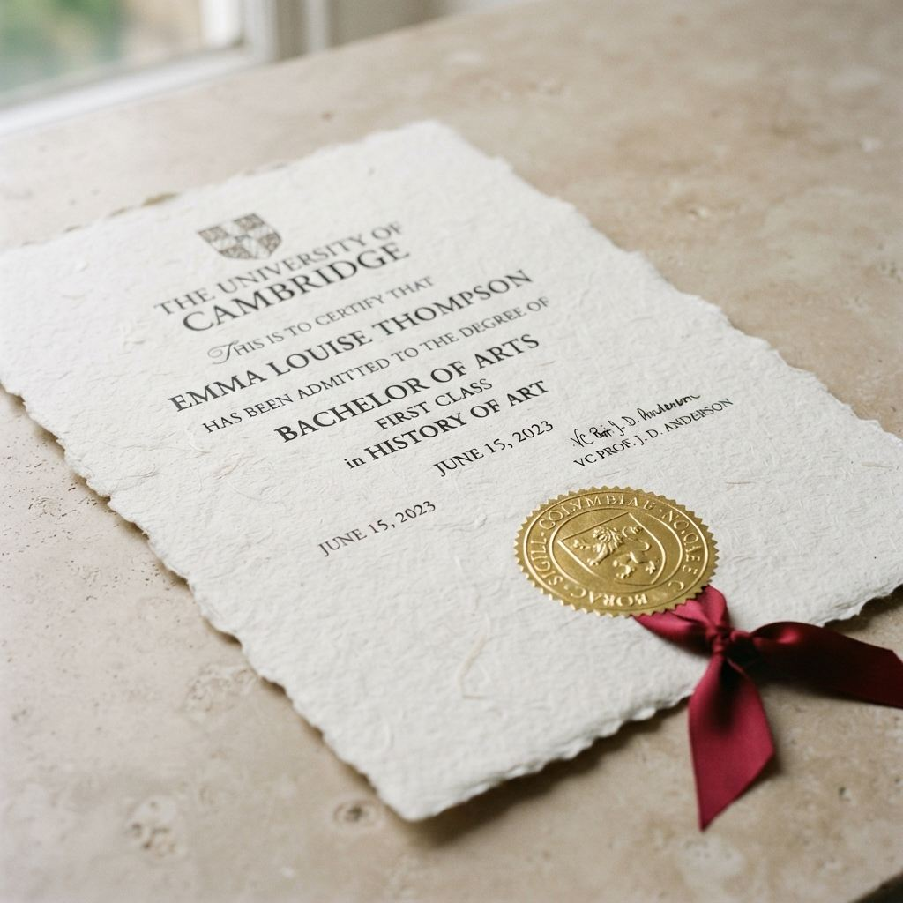

Collation académique
Amphithéâtre Patrice Lumumba · Campus du Mont Amba, Lemba.
4°25'08"S · 15°18'28"E
Ouvrir dans Maps
« Une étape franchie. La suite commence ici. »
« J'aurai le plaisir de célébrer avec vous la fin de mon parcours universitaire et le début d'une nouvelle aventure. »
Le Conseil facultaire ainsi que la famille du récipiendaire vous prient de bien vouloir rehausser de votre présence cette séance de collation des grades académiques.
Capacité réservée : 02 invités

J−--
--:--:--
--% accompli
Les portes de l'amphithéâtre Patrice Lumumba seront fermées 15 minutes avant les hymnes protocolaires.
Amphithéâtre Patrice Lumumba · Campus du Mont Amba, Lemba.
4°25'08"S · 15°18'28"E
Ouvrir dans MapsLes Jardins du Fleuve · Gombe. Toast d'honneur, buffet et festivités au coucher du soleil kinois.
R.S.V.P. impératif · tables attribuées
Ouvrir dans Maps
| Horaire | Séquence | Lieu |
|---|---|---|
| 08:00 — 08:45 | Accueil & émargementContrôle des cartons nominatifs, installation au gradin sud. | Grand péristyle |
| 09:00 — 12:00 | Collation & remise des gradesCortège rectoral, allocutions inaugurales, remise des insignes. | Auditorium Lumumba |
| 12:30 — 14:00 | Séance photo protocolairePhotographies de promotion, clichés de famille et presse. | Arcades centrales |
| 15:00 — 17:30 | Réception & allocutionsToast d'honneur, discours des parrains, cocktail. | Jardins du Fleuve |
| 18:00 — fin | Célébration & dîner festifBanquet d'honneur et festivités de clôture. | Pavillon Kasavubu |
« Faites-vous beau. Mais restez vous-même. »
#F4F1EALins lavés, popeline#1D3B5CFlanelle, soie#E3B22CAccessoires, pochette#6A2A33Écharpe d'académie
Titre d'accès auditorium & banquet
Madame Céleste Mbuyi
Invité·e d'honneur de Kabeya Mukendi Marc
Kabeya Mukendi Marc · Kinshasa · République démocratique du Congo